잡콕
영상·음성 기반 AI 면접 분석을 결합한 구인구직 플랫폼. 구직자 화면과 기업 화면 모두 담당
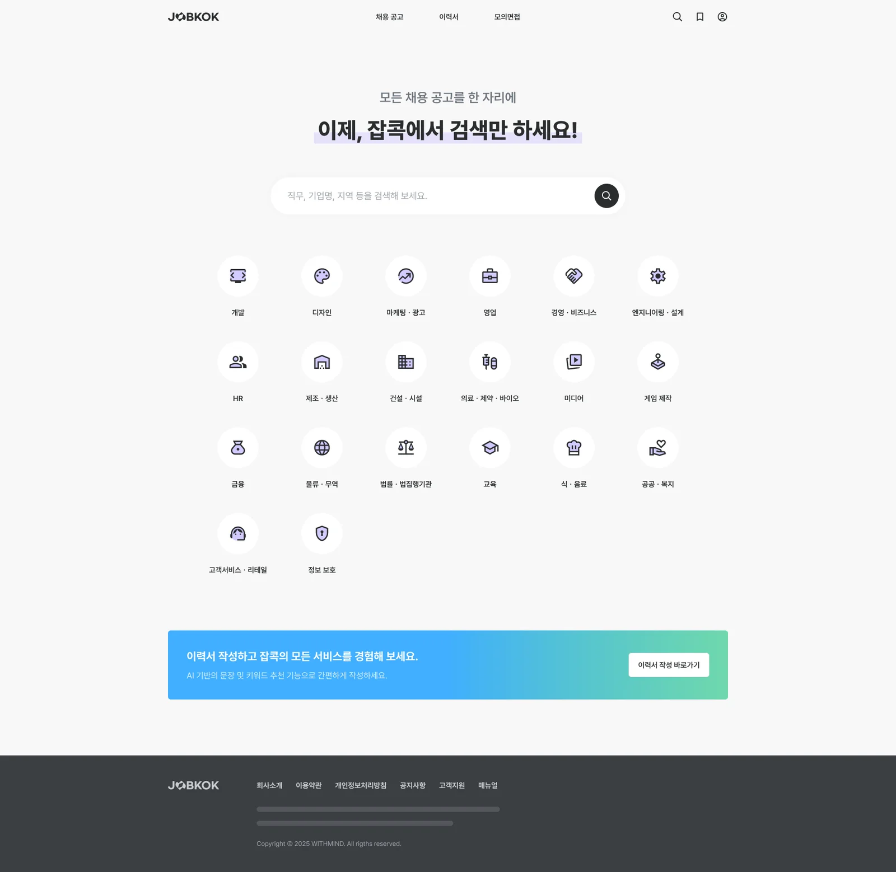
사용 기술
Java Spring으로 만든 웹사이트에서 화면과, 화면이 서버와 데이터를 주고받는 부분 담당. 구직자·기업 화면을 PC와 휴대폰 어디서든 쓸 수 있게 제작. AI 모델은 과제 팀이 만들고, 저는 AI 분석 결과를 받아 화면에 보여주는 부분 담당
프로젝트 소개
구직자는 이력서 작성과 모의면접 후 맞는 공고를 추천받고, 기업은 그 결과를 보고 지원자 선별. 같은 이력서와 면접 리포트를 두 화면에서 다르게 배치하는 작업이 핵심
메인
- 검색
- 직군 선택
- 로그인 · 회원가입
- 주요 기능 소개
로그인 · 회원가입
- 이메일 로그인
- 소셜 로그인 (카카오 · 네이버 · 구글)
- 비밀번호 찾기 · 재설정
- 이메일 · 소셜 가입
채용공고
- 직군 리스트
- 키워드 · 지역 · 직무 필터
- 정렬 (최신 · 마감 · 추천)
- 공고 검색
- 이력서 기반 추천
- 공고 상세
MY 이력서
- 이력서 리스트 · 등록
- AI 작성 지원 (키워드 · 문장 추천)
- 이력서 상세
- 수정 · 삭제
모의면접
- AI 모의면접 시작
- 결과 리포트 리스트
- 리포트 상세 (종합 · 상세 · 이력서 분석)
공고등록 (기업)
- 공고 URL 입력
이력서 작성과 공개 범위
학력과 경력 입력 시 희망 직무와 스킬 키워드 추천, 이력서 제목과 자기소개서 작성까지 연결. 입력 항목이 많아 단계별로 분리
이력서, 면접 영상, 분석 리포트의 공개 여부를 항목별로 설정. 면접 영상에는 얼굴과 목소리가 담기므로, 토글 하나 대신 누구에게 어디까지 보이는지 화면에 함께 표시
- 항목별 카드 분리경력, 학력, 스킬을 카드 단위로 나누고, 오른쪽 목록에서 작성한 항목 체크
- AI 추천 키워드 칩경력과 학력 기반 추천 스킬을 칩으로 제시, 눌러서 바로 추가
- AI 문장 추천담당 업무 작성 후 버튼 하나로 성과 중심 문장 제안
AI 모의면접과 리포트
모의면접은 표정, 음성, 답변 내용을 분석해 리포트 생성. 응시 진입부터 진행 상태, 결과 확인까지의 화면 담당
분석 완료까지 시간이 걸려, 목록에서 완료 여부를 바로 보이게 하고 진행 중인 건은 상태를 문장으로 표시
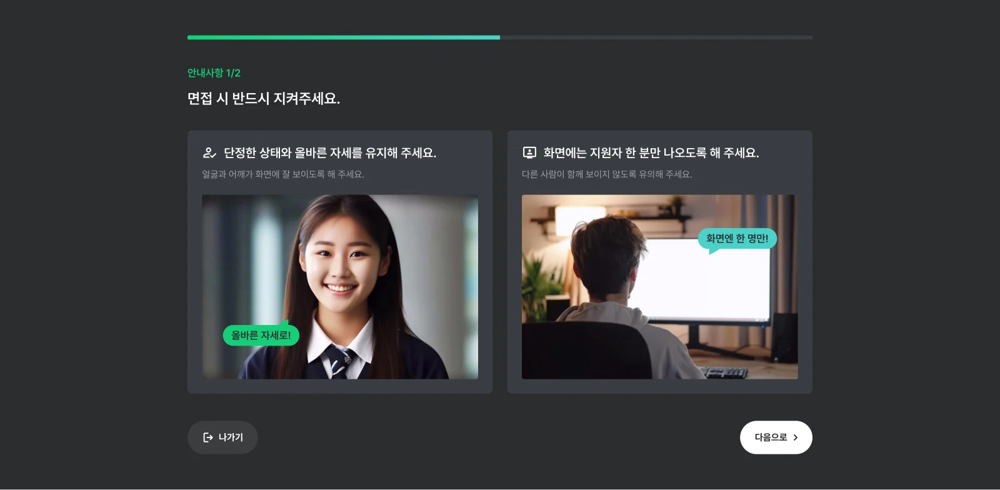
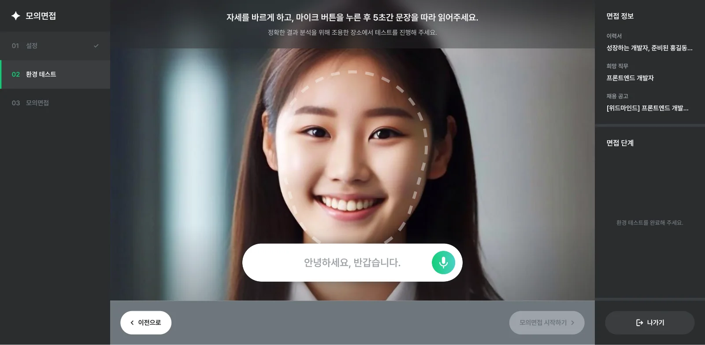
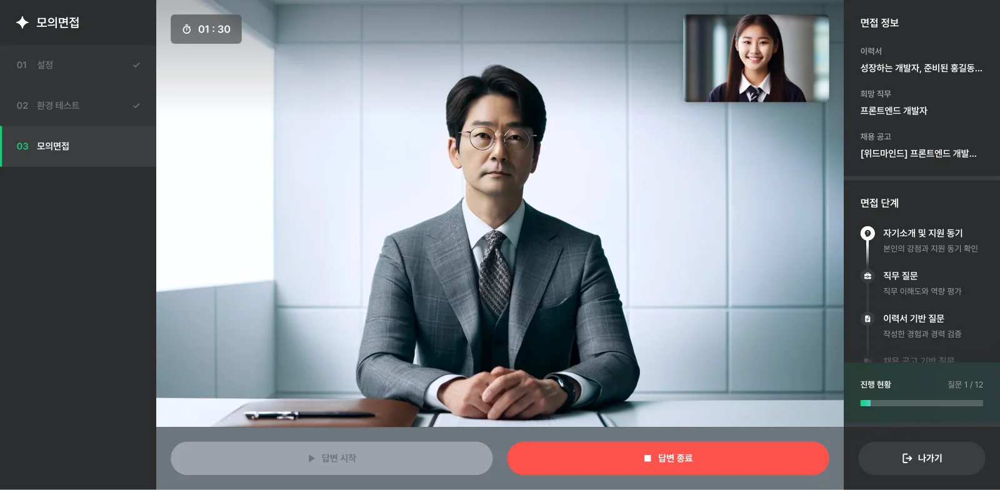
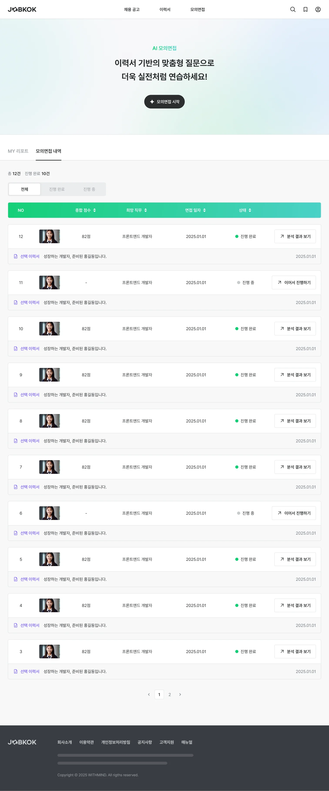
결과 리포트는 점수만 크게 보여주지 않고 표정·음성·내용으로 나눠, 다음에 고칠 점이 보이도록 구성
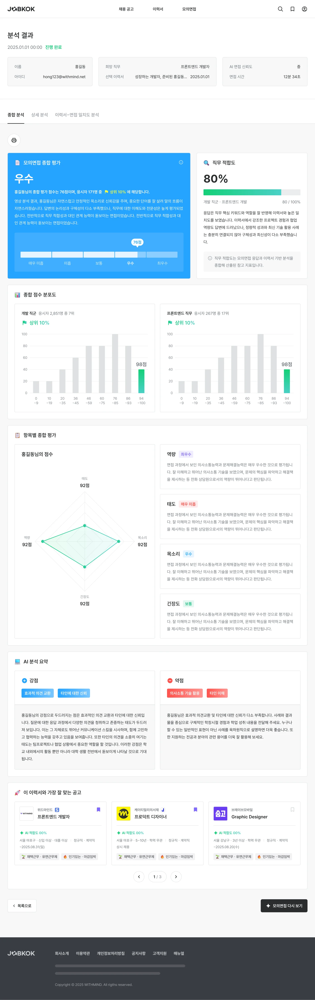
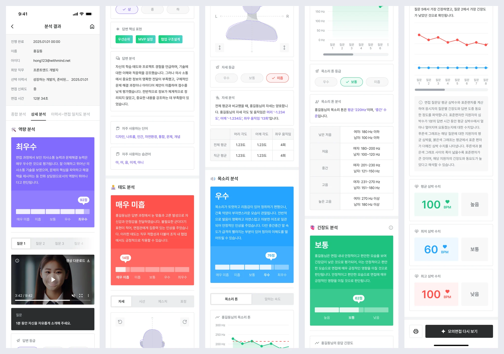
공고 추천과 검색
이력서와 면접 분석 결과 기반 공고 추천, 외부 채용 사이트 공고도 함께 수집해 표시. 카드에서 공고 출처와 추천 여부를 구분할 수 있도록 처리
검색 조건이 늘수록 무엇이 걸려 있는지 놓치기 쉬워, 적용된 필터를 목록 위에 항상 유지
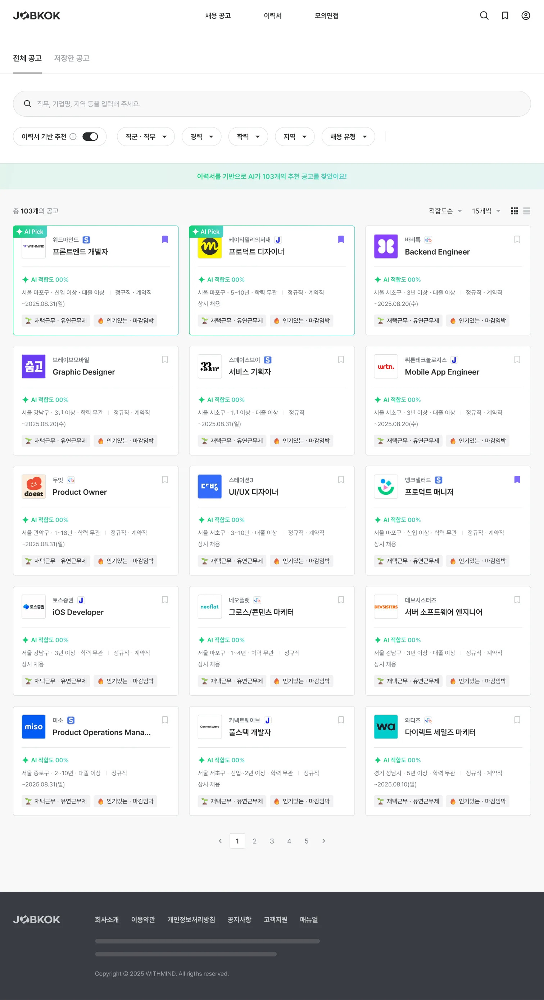
공고 상세에서는 근무 조건을 오른쪽에 고정하고, 해당 공고로 바로 모의면접을 볼 수 있도록 연결
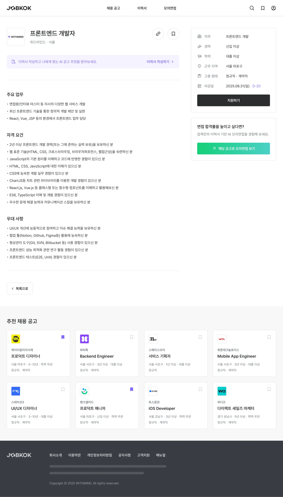
기업 화면
기업은 다른 채용 사이트의 공고 URL만 올려도 공고 등록 가능. AI가 보완할 점 제안과 허위·차별 표현 표시, 고칠 곳은 공고 본문 안에서 바로 짚어 주도록 구현
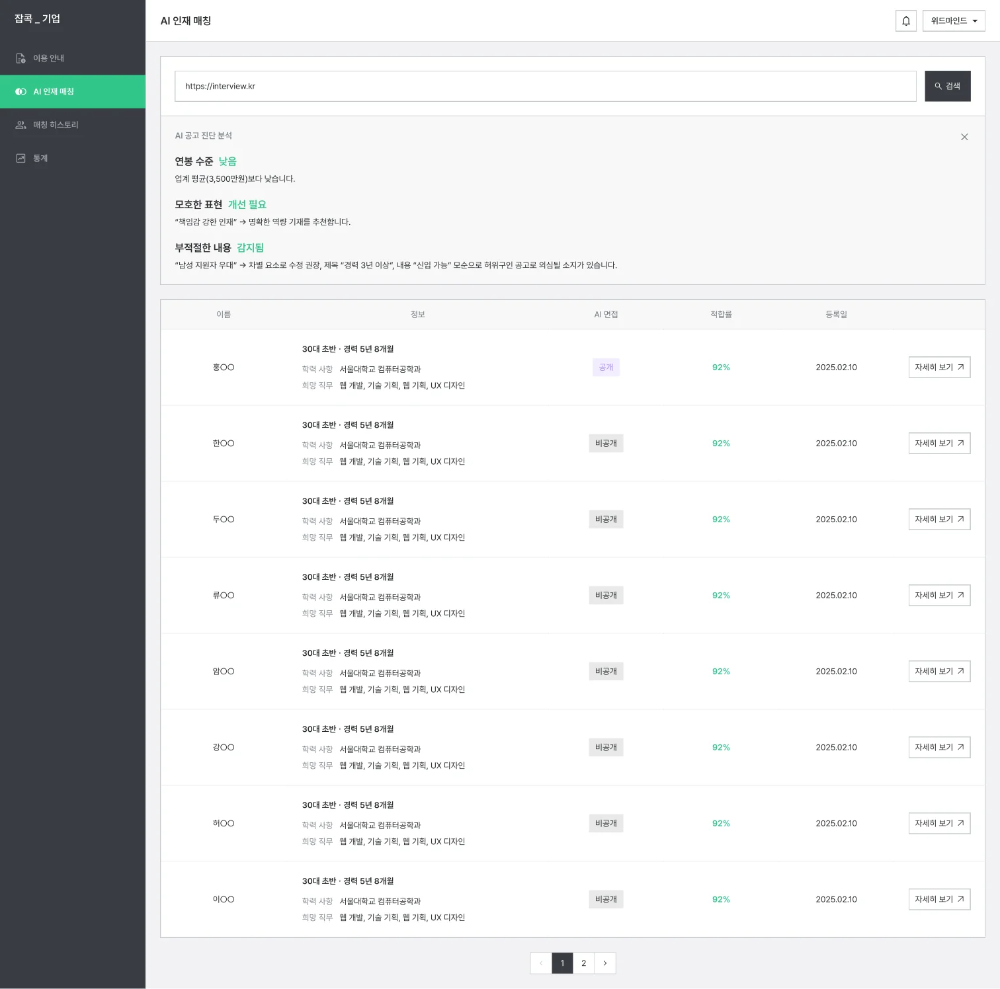
- URL로 공고 등록다른 채용 사이트 공고 주소만 붙여 넣어 등록
- AI 공고 진단연봉 수준, 모호한 표현, 차별·허위 의심 문구를 항목별로 표시
- 지원자 목록AI 면접 공개 여부와 적합률을 한 줄에 배치
지원자 목록에서 이력서, 면접 영상, AI 리포트를 함께 확인. 구직자 화면과 같은 데이터지만 정렬과 강조 항목이 달라 컴포넌트 별도 구현
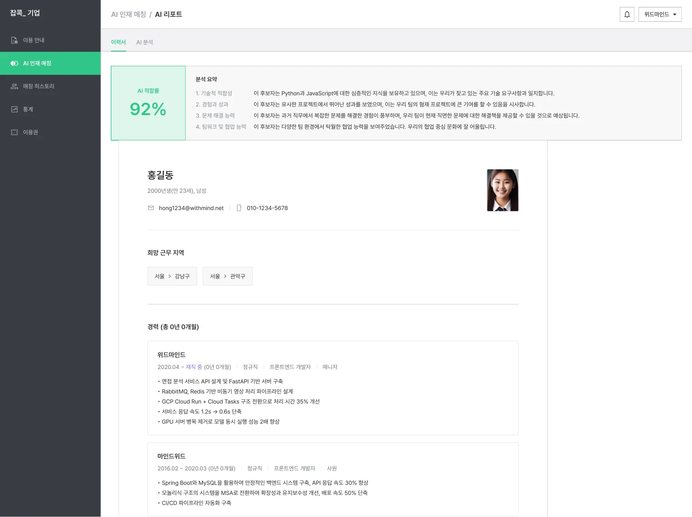
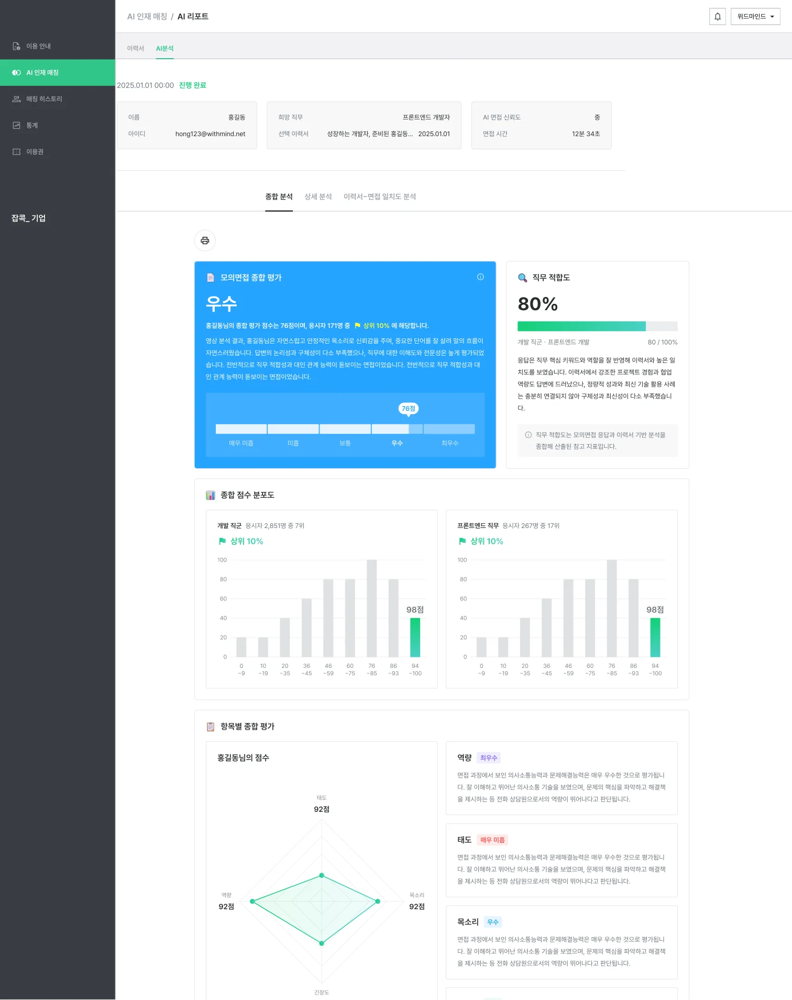